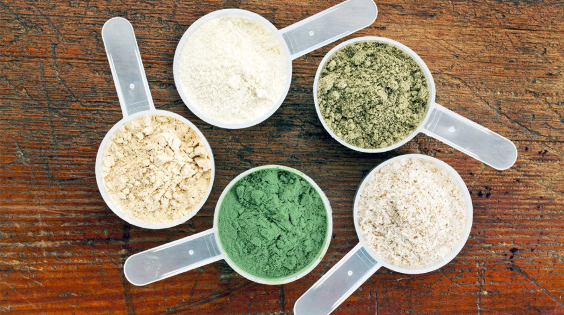
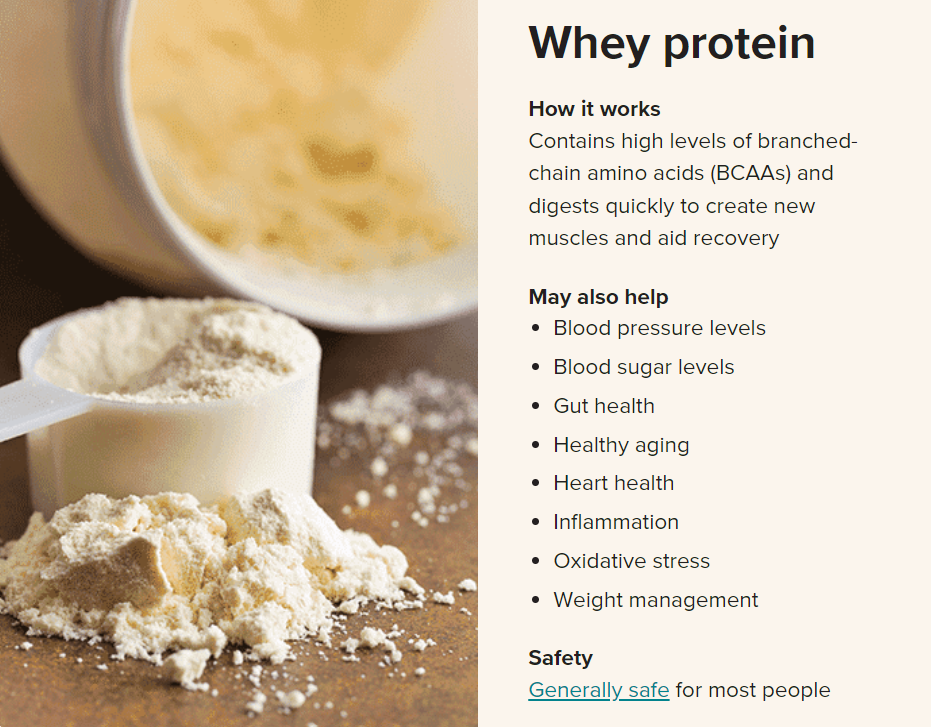

Importance of Protein

Protein powders are concentrated sources of protein from animal or plant foods, such as dairy, eggs, rice or peas.
There are three common forms:
Protein concentrates: Produced by extracting protein from whole food using heat and acid or enzymes. These typically supply 60–80% protein, with the remaining 20–40% composed of fat and carbs.
Protein isolates: An additional filtering process removes more fat and carbs, further concentrating the protein. Protein isolate powders contain about 90–95% protein.
Protein hydrolysates: Produced by further heating with acid or enzymes — which breaks the bonds between amino acids — hydrolysates are absorbed more quickly by your body and muscles.
Hydrolysates appear to raise insulin levels more than other forms — at least in the case of whey protein. This can enhance your muscle growth following exercise (1Trusted Source).
Some powders are also fortified with vitamins and minerals, especially calcium.
However, not everyone benefits from these powders. If your diet is already rich in high-quality protein, you likely won’t see much difference in your quality of life by adding protein powder.
However, athletes and people who regularly lift weights may find that taking protein powder helps maximize muscle gain and fat loss.
Protein powders can also aid individuals who struggle to meet protein needs with food alone, such as people who are ill, older adults and some vegetarians or vegans.
